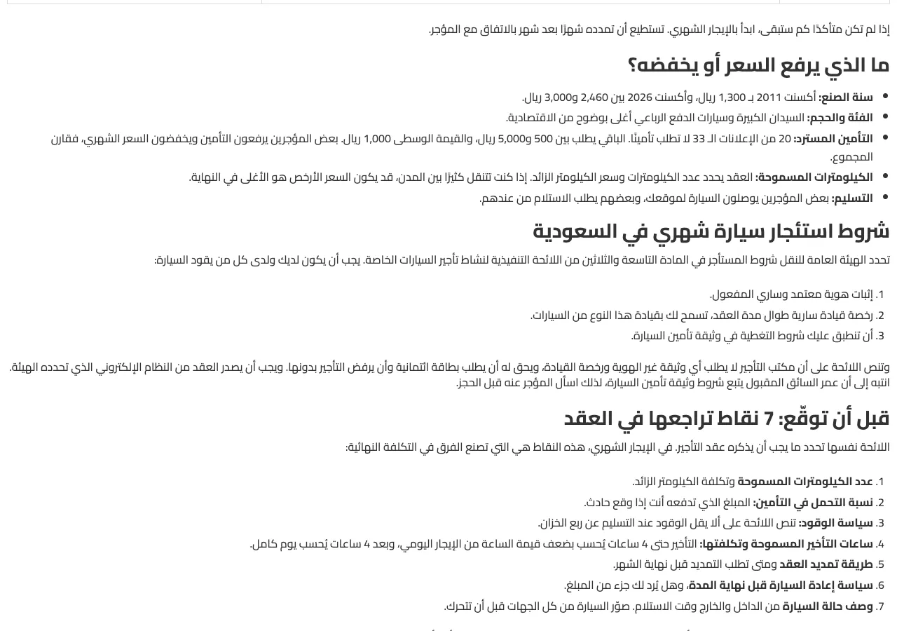
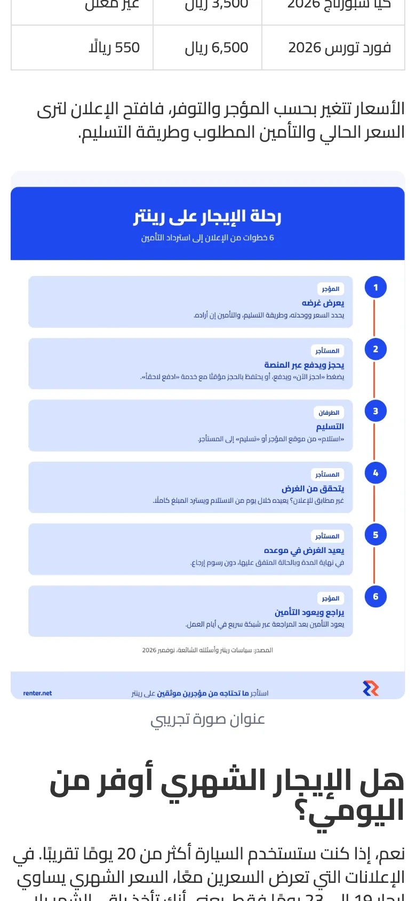
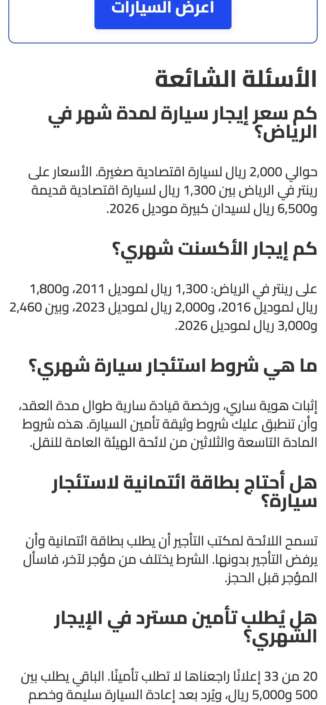
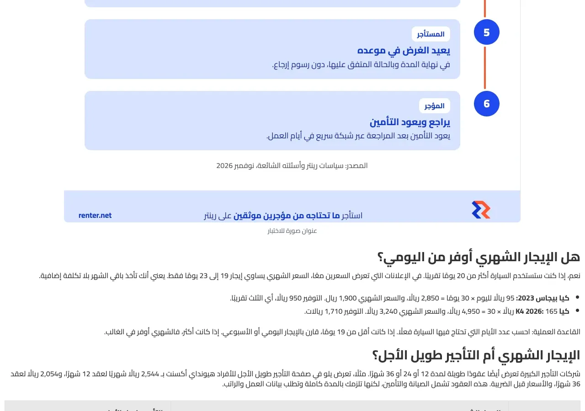
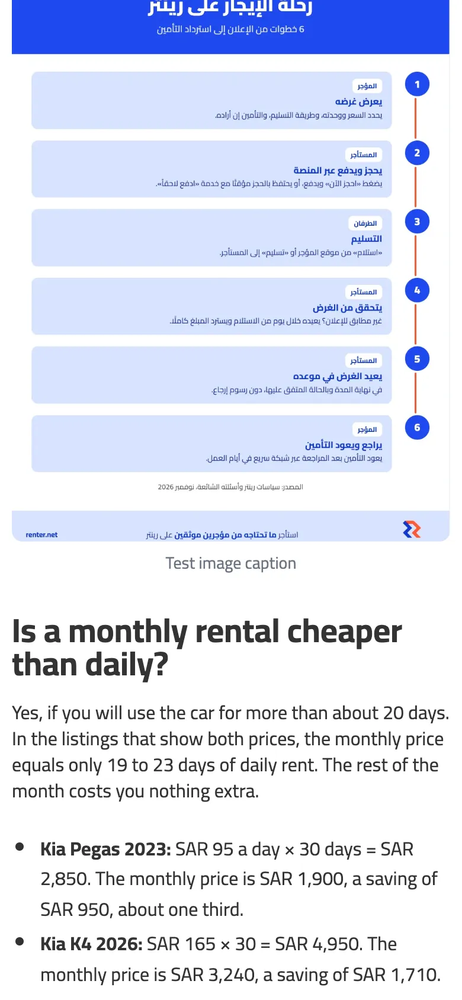
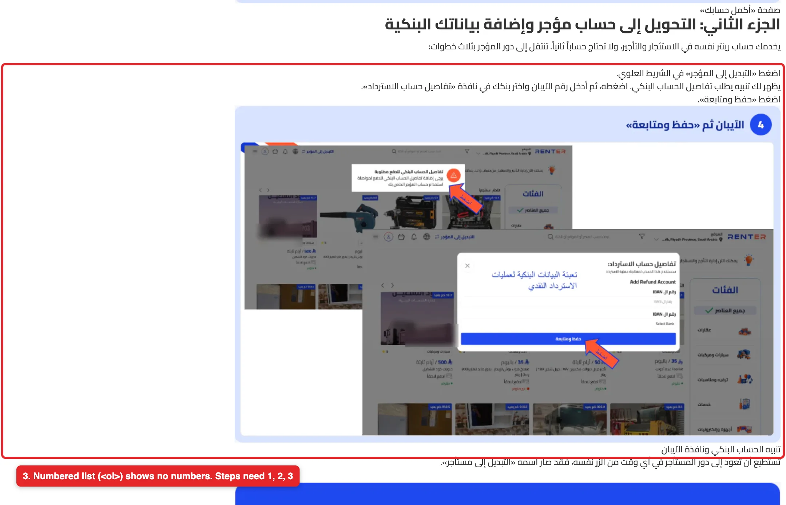
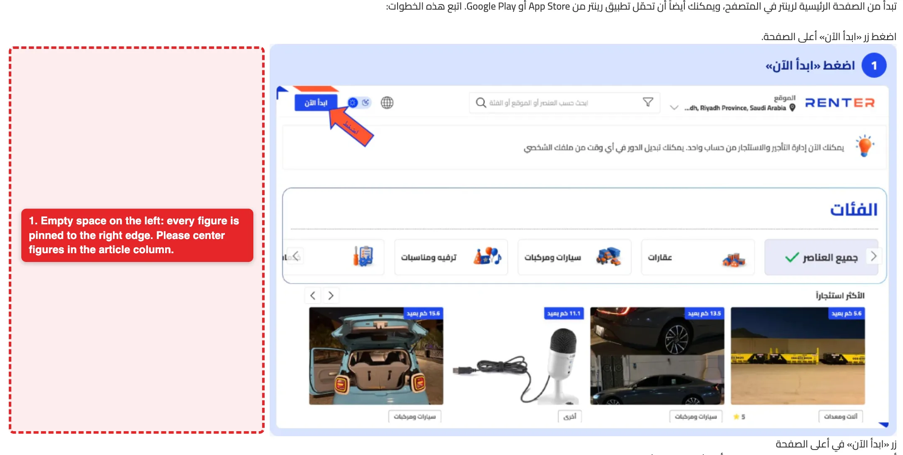
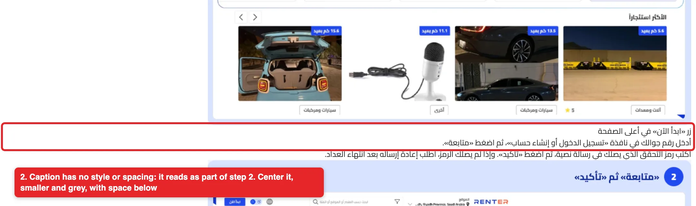
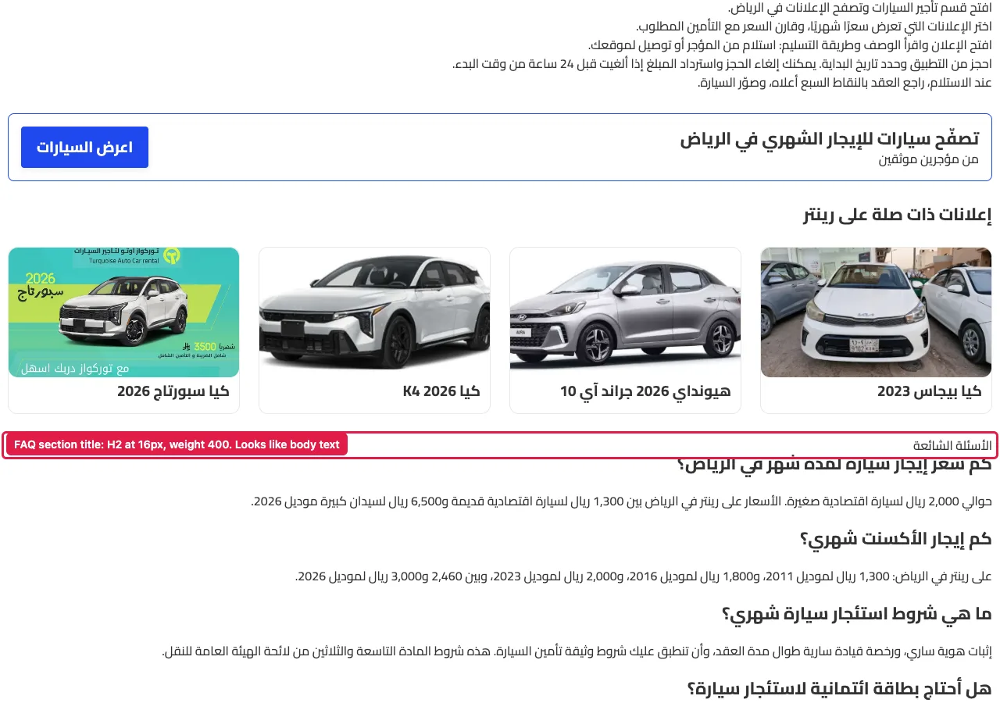

Renter × TMD · Sub-ticket of issue 11 · checked live Nov 3, 2026
div.category-module__hgwSIq__postBody on every article, both languages| # | Problem (measured Nov 3) | Fix | Done when |
|---|---|---|---|
| 1 | STAGING OK NOV 4 ol: decimal, 24 px padding; ul: disc, 24 px padding, in both languages and on phone. Was: Numbered lists show no numbers. In the post body, ol has list-style-type: none and padding-inline-start: 0. Bullet lists (ul) keep disc but also have 0 padding, so the bullets hang outside the text column. 17 numbered lists across the 6 posts are affected, for example the steps under كيف تستأجر سيارة شهريًا من رينتر in post 1. | .postBody ol { list-style: decimal; padding-inline-start: 1.5em; }.postBody ul { list-style: disc; padding-inline-start: 1.5em; }.postBody li { margin-block: 4px; } | Each numbered list in post 1 shows 1, 2, 3 at the start of each line, on the right in Arabic and the left in English. Bullets sit inside the text column. |
| 2 | STAGING OK NOV 4 test figure centered: 130 px on each side of a 1,000 px image at 1,280 px; full width (370 px) on phone. Was: Figures are not centered. The figure spans the full column (1,260 px at a 1,280 px window) with text-align: start and margin 0, so the 1,000 px image sits against the right edge. | .postBody figure { margin: 24px auto 32px; text-align: center; }.postBody figure img { margin-inline: auto; height: auto; } | On the tents post, both infographics sit in the middle of the column on desktop, and fill the width on a phone. |
| 3 | STAGING OK NOV 4 caption 14 px, #6b7280, centered, 8 px below the image, 32 px before the next heading. Was: Captions look like stray body text. figcaption is 16 px, color #333, margin 0, aligned to the start, and the next element is often an h2. Readers read the caption as a loose sentence glued to the next heading, for example 3 طرق لتسعير تأجير الخيام on the tents post. | .postBody figcaption { font-size: 14px; color: #6b7280; margin-top: 8px; text-align: center; }The figure bottom margin in fix 2 gives the space before the next heading. | Each caption is centered under its image, smaller and grey, with clear space before the next heading. |
| 4 | STAGING OK NOV 4 h2#faq is 28 px, weight 700, same as the body H2; questions stay 22 px. Was: The FAQ section title looks like body text. h2#faq (الأسئلة الشائعة, "FAQ") is 16 px, weight 400. The body H2s are 28 px, weight 700, and the questions under it (h3) are 22 px, weight 700, so the title is smaller than its own questions. New: the FAQ title was not in the Nov 1 Slack message. | Give h2#faq the same style as the body H2: 28 px, weight 700, with the same top margin. | On post 1, the FAQ title looks like the other section titles and is larger than the questions under it. |








